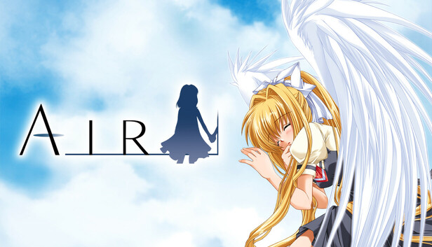
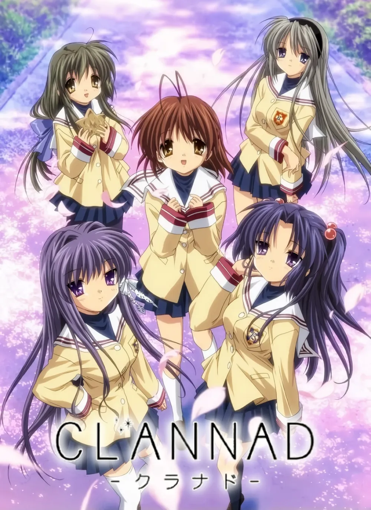
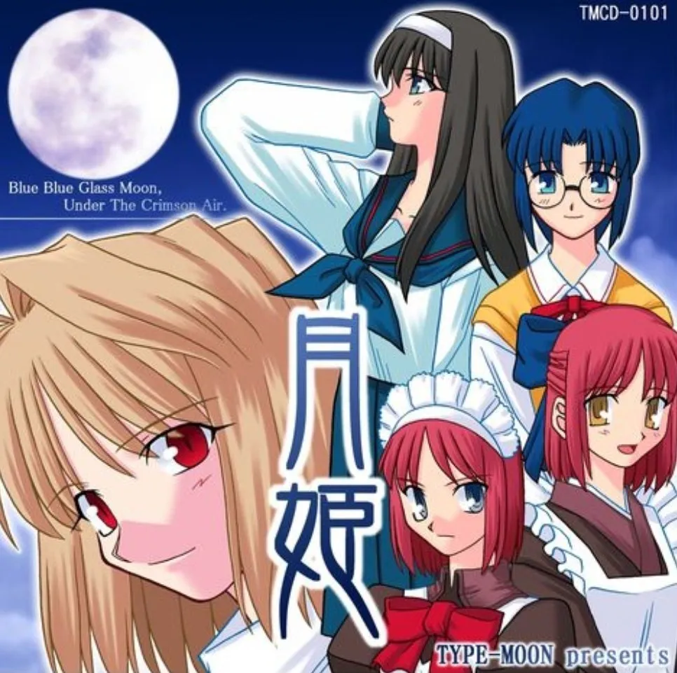
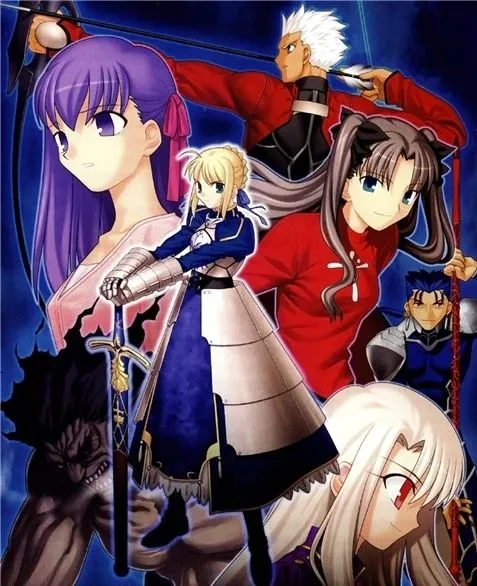

1. 감정적 비주얼 노벨: 일상의 무게와 구원
『AIR』(2000) & 『CLANNAD』(2004) 등 Key 작품


- 소소한 일상에 대한 애착을 가족, 상실, 돌봄이라는 깊고 감정적인 서사로 발전시킴.
2. 전기·세계관 중심: 다중 루트와 평행 우주
『월희』(2000) & 『Fate/stay night』(2004) 등 TYPE-MOON 작품


- 방대한 고유 명사로 점철된 독창적인 거대 평행 우주 세계관(나스버스) 창조.
- '인물별 루트(Route)'가 세계관과 주인공의 이면을 탐구하는 경로로 작동함.